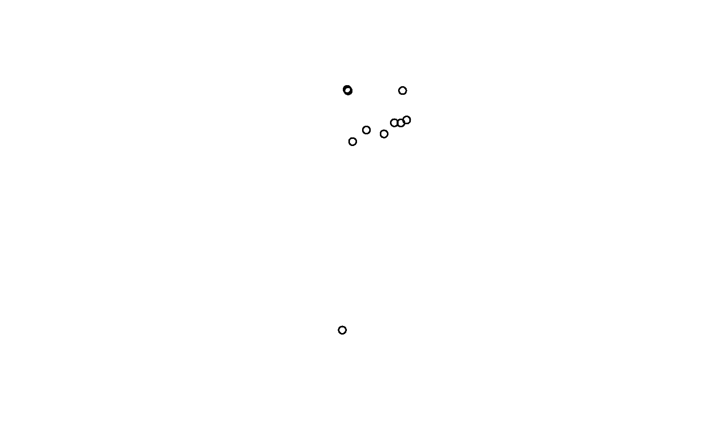

Internal function - not developed to be used outside of spatsoc functions
Arguments
- geometry
sfc (simple feature geometry list column) from
get_geometry()- x
X coordinate column, numeric
- y
Y coordinate column, numeric
- crs
crs for x, y coordinates, ignored for geometry argument
- use_mean
boolean predetermine if centroid calculated via mean
Value
The underlying centroid function used depends on the crs of the coordinates or geometry provided.
If the crs is longlat degrees (as determined by
sf::st_is_longlat()) andsf::sf_use_s2()is TRUE, the distance function issf::st_centroid()which passes tos2::s2_centroid().If the crs is longlat degrees but
sf::sf_use_s2()is FALSE, the centroid calculated will be incorrect. Seesf::st_centroid().If the crs is not longlat degrees (eg. NULL, NA_crs_, or projected), the centroid function used is mean.
Note: if the input is length 1, the input is returned.
Details
Calculate centroid for one of:
geometry
the points in x, y
the pairwise points in geometry_a and geometry_b
the pairwise points in x_a, y_a and x_b, y_b
Examples
# Load data.table
library(data.table)
# Read example data
DT <- fread(system.file("extdata", "DT.csv", package = "spatsoc"))
DT[, spatsoc:::calc_centroid(x = X, y = Y, crs = 32736)]
#> X Y
#> 1 700845.7 5506712
get_geometry(DT, coords = c('X', 'Y'), crs = 32736)
#> ID X Y datetime population
#> <char> <num> <num> <POSc> <int>
#> 1: A 715851.4 5505340 2016-11-01 00:00:54 1
#> 2: A 715822.8 5505289 2016-11-01 02:01:22 1
#> 3: A 715872.9 5505252 2016-11-01 04:01:24 1
#> 4: A 715820.5 5505231 2016-11-01 06:01:05 1
#> 5: A 715830.6 5505227 2016-11-01 08:01:11 1
#> ---
#> 14293: J 700616.5 5509069 2017-02-28 14:00:54 1
#> 14294: J 700622.6 5509065 2017-02-28 16:00:11 1
#> 14295: J 700657.5 5509277 2017-02-28 18:00:55 1
#> 14296: J 700610.3 5509269 2017-02-28 20:00:48 1
#> 14297: J 700744.0 5508782 2017-02-28 22:00:39 1
#> geometry
#> <sfc_POINT>
#> 1: POINT (715851.4 5505340)
#> 2: POINT (715822.8 5505289)
#> 3: POINT (715872.9 5505252)
#> 4: POINT (715820.5 5505231)
#> 5: POINT (715830.6 5505227)
#> ---
#> 14293: POINT (700616.5 5509069)
#> 14294: POINT (700622.6 5509065)
#> 14295: POINT (700657.5 5509277)
#> 14296: POINT (700610.3 5509269)
#> 14297: POINT (700744 5508782)
# Calculating centroids requires recomputing the bbox when:
# 1- by = , 2- providing geometry
DT[, centroid := spatsoc:::calc_centroid(geometry), by = ID]
#> ID X Y datetime population
#> <char> <num> <num> <POSc> <int>
#> 1: A 715851.4 5505340 2016-11-01 00:00:54 1
#> 2: A 715822.8 5505289 2016-11-01 02:01:22 1
#> 3: A 715872.9 5505252 2016-11-01 04:01:24 1
#> 4: A 715820.5 5505231 2016-11-01 06:01:05 1
#> 5: A 715830.6 5505227 2016-11-01 08:01:11 1
#> ---
#> 14293: J 700616.5 5509069 2017-02-28 14:00:54 1
#> 14294: J 700622.6 5509065 2017-02-28 16:00:11 1
#> 14295: J 700657.5 5509277 2017-02-28 18:00:55 1
#> 14296: J 700610.3 5509269 2017-02-28 20:00:48 1
#> 14297: J 700744.0 5508782 2017-02-28 22:00:39 1
#> geometry centroid
#> <sfc_POINT> <sfc_POINT>
#> 1: POINT (715851.4 5505340) POINT (702907.1 5507821)
#> 2: POINT (715822.8 5505289) POINT (702907.1 5507821)
#> 3: POINT (715872.9 5505252) POINT (702907.1 5507821)
#> 4: POINT (715820.5 5505231) POINT (702907.1 5507821)
#> 5: POINT (715830.6 5505227) POINT (702907.1 5507821)
#> ---
#> 14293: POINT (700616.5 5509069) POINT (701592.9 5506961)
#> 14294: POINT (700622.6 5509065) POINT (701592.9 5506961)
#> 14295: POINT (700657.5 5509277) POINT (701592.9 5506961)
#> 14296: POINT (700610.3 5509269) POINT (701592.9 5506961)
#> 14297: POINT (700744 5508782) POINT (701592.9 5506961)
DT[, centroid := sf::st_sfc(centroid, recompute_bbox = TRUE)]
#> ID X Y datetime population
#> <char> <num> <num> <POSc> <int>
#> 1: A 715851.4 5505340 2016-11-01 00:00:54 1
#> 2: A 715822.8 5505289 2016-11-01 02:01:22 1
#> 3: A 715872.9 5505252 2016-11-01 04:01:24 1
#> 4: A 715820.5 5505231 2016-11-01 06:01:05 1
#> 5: A 715830.6 5505227 2016-11-01 08:01:11 1
#> ---
#> 14293: J 700616.5 5509069 2017-02-28 14:00:54 1
#> 14294: J 700622.6 5509065 2017-02-28 16:00:11 1
#> 14295: J 700657.5 5509277 2017-02-28 18:00:55 1
#> 14296: J 700610.3 5509269 2017-02-28 20:00:48 1
#> 14297: J 700744.0 5508782 2017-02-28 22:00:39 1
#> geometry centroid
#> <sfc_POINT> <sfc_POINT>
#> 1: POINT (715851.4 5505340) POINT (702907.1 5507821)
#> 2: POINT (715822.8 5505289) POINT (702907.1 5507821)
#> 3: POINT (715872.9 5505252) POINT (702907.1 5507821)
#> 4: POINT (715820.5 5505231) POINT (702907.1 5507821)
#> 5: POINT (715830.6 5505227) POINT (702907.1 5507821)
#> ---
#> 14293: POINT (700616.5 5509069) POINT (701592.9 5506961)
#> 14294: POINT (700622.6 5509065) POINT (701592.9 5506961)
#> 14295: POINT (700657.5 5509277) POINT (701592.9 5506961)
#> 14296: POINT (700610.3 5509269) POINT (701592.9 5506961)
#> 14297: POINT (700744 5508782) POINT (701592.9 5506961)
plot(DT$centroid)
